Ad Studio statics: the launch 20
5 ad sets of 4, all selling "clone 3 winning ads, free". Manifest: launch_statics.json · Handoff for CPMA: HANDOFF.md · Images: launch/img/ (4:5 and 1:1 for every ad).
AS1 · 3 free ads (priority)
PRIORITY (Farooq, 14 Nov): hooks built on the free offer. Every ad here leads with 3 free ads, in the image and in the first line of the copy.
 L01 · Free: 3 ads that already won.
L01 · Free: 3 ads that already won.Your first 3 ads are free. Make them ads that already won: a 372-day Black Friday ad, a 177-day headphones ad, a 164-day soda ad. Pick any 3 winners on Ad Radar and Brevo Ad Studio clones them for your product. No credit card.
Headline: Free: 3 ads that already won · No credit card. · The offer as news · 8.7/10 · batch2-35b
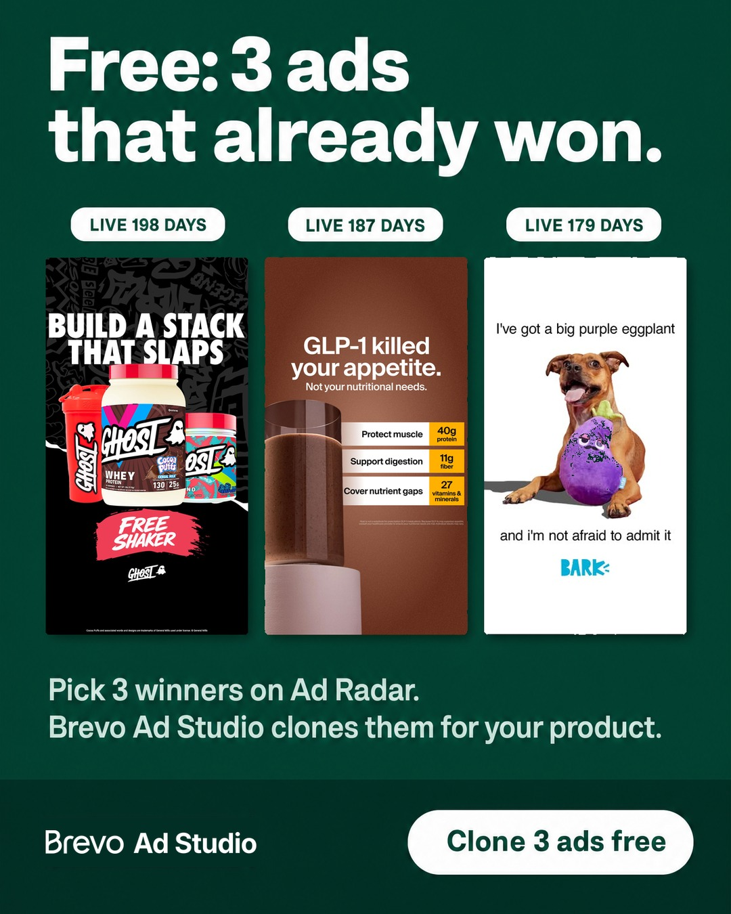
L02 · Free: 3 ads that already won.Your first 3 ads are free. Pick winners like these: a 198-day supplement ad, a 187-day meal shake ad, a 179-day dog toy ad. Brevo Ad Studio clones them around your product in under 2 minutes. No credit card.
Headline: 3 winning ads. Free. · No credit card. · The offer as news · 8.7/10 · batch2-35a
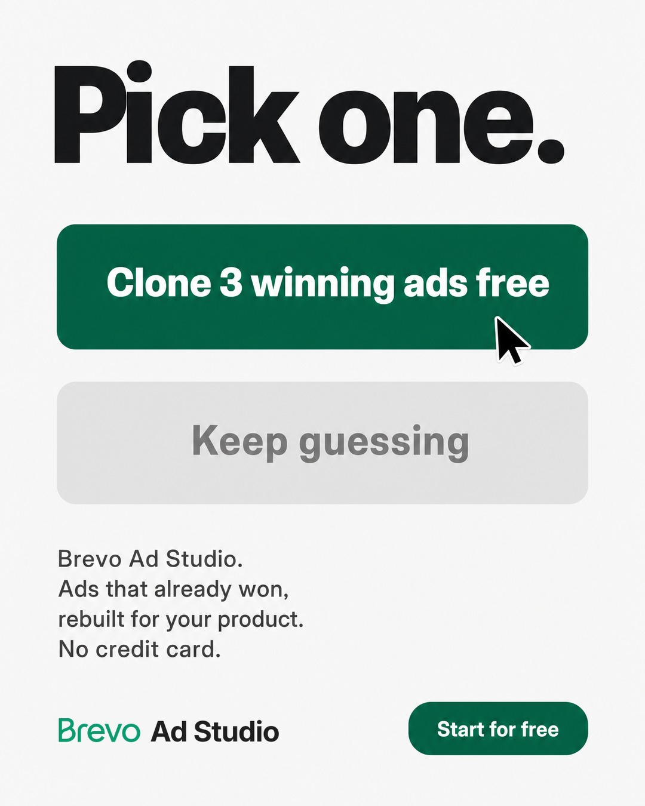
L03 · Pick one.Your first 3 ads are free. Two options: keep guessing, or clone 3 ads that already worked for months. Brevo Ad Studio rebuilds them around your product. No credit card.
Headline: Clone 3 winning ads free · No credit card. · The ultimatum (two buttons) · 9.3/10 · batch2-28
 L04 · No brief. No shoot. No card. Just clone.
L04 · No brief. No shoot. No card. Just clone.Your first 3 ads are free, and you won't need a brief, a shoot or a card. Paste a product link, pick a winner on Ad Radar and Brevo Ad Studio rebuilds it for your product.
Headline: Just clone. First 3 free. · No credit card. · The list of things you give up · 8.3/10 · batch2-40
AS2 · The receipt
A real winner next to its real Ad Studio clone, for $0: the proof, in the edgiest templates.
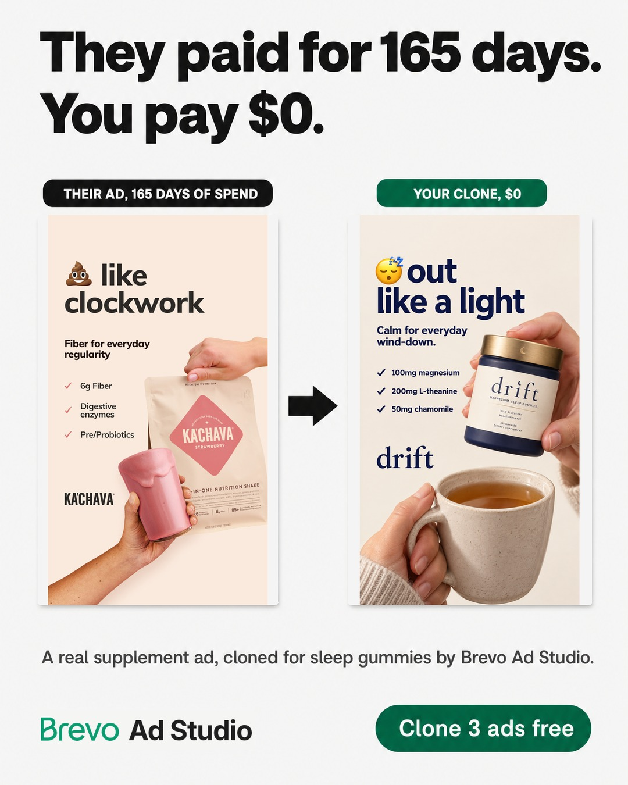
L05 · They paid for 165 days. You pay $0.They paid for the testing. You pay $0. A fiber ad about pooping like clockwork ran for 165 days, and we cloned it for sleep gummies: "out like a light". Your first 3 clones are free with Brevo Ad Studio. No credit card.
Headline: They paid. You clone free. · First 3 clones free. · The absurd comparison · 9.0/10 · batch2-31c
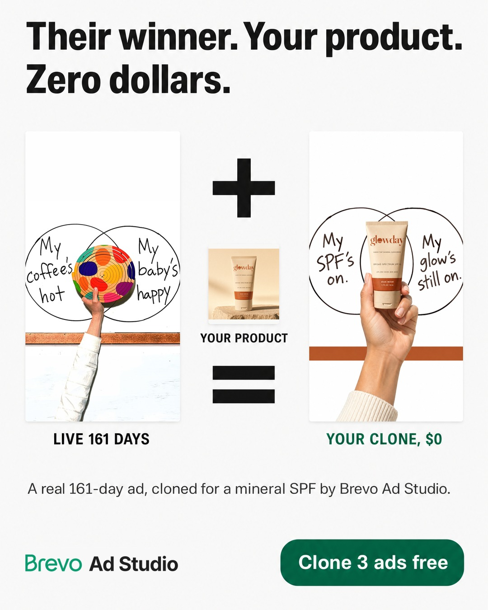
L06 · Their winner. Your product. Zero dollars.Their winner plus your product link equals your next ad, for $0. We cloned a real 161-day Venn diagram ad for a mineral SPF. Your first 3 clones are free with Brevo Ad Studio. No credit card.
Headline: Their winner. Your product. $0. · First 3 clones free. · The absurd equation · 8.5/10 · batch2-24b
 L07 · 198 days of testing. Cloned in under 2 minutes.
L07 · 198 days of testing. Cloned in under 2 minutes.A supplement ad told people to "build a stack that slaps" and ran for 198 days. We cloned it for sleep gummies in under 2 minutes: same energy, new product, new copy. Pick any winner on Ad Radar and Brevo Ad Studio rebuilds it around your product. Your first 3 clones are free. No credit card.
Headline: Clone 3 winning ads free · No credit card. · The receipt (before and after with a time stamp) · 8.8/10 · batch2-21c
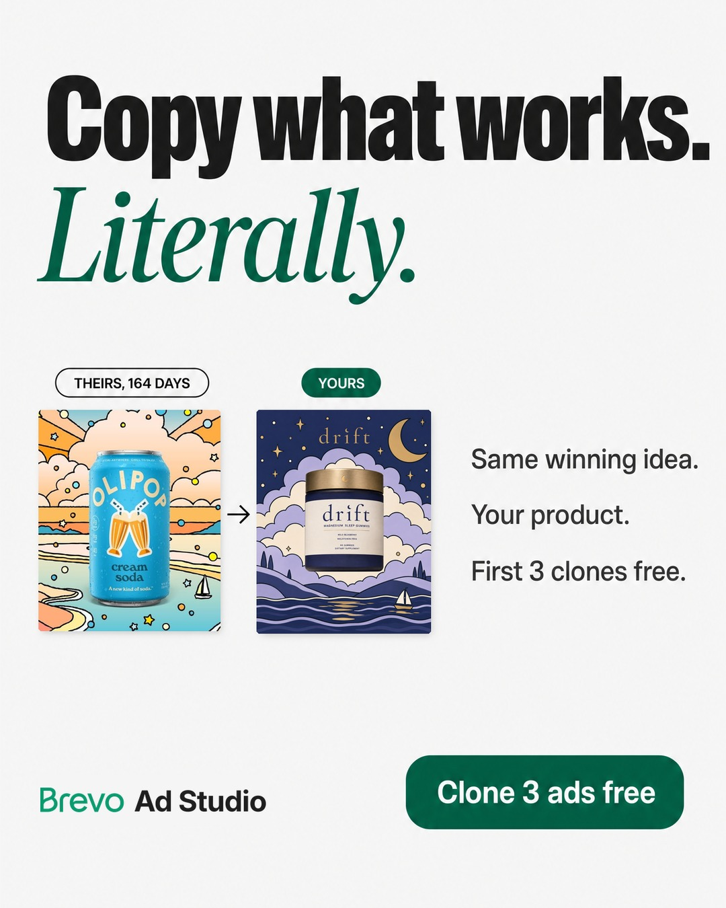
L08 · Copy what works. Literally.Not inspired by. Not "in the style of". Copied: an illustrated soda ad ran for 164 days, and became an illustrated sleep gummies ad in under 2 minutes. Same winning idea, your product. First 3 clones free with Brevo Ad Studio.
Headline: Clone 3 winning ads free · No credit card. · The literal command · 8.3/10 · batch2-39c
AS3 · The clock
Loss by rivalry: the winner keeps running, waiting costs money.
 L09 · Day 691. Still running. Still not yours.
L09 · Day 691. Still running. Still not yours.Day 691 and the ad is still live, which means it still sells. Every day it runs, it works for someone else. Find it on Ad Radar, clone it for your product and run it this week. First 3 clones free with Brevo Ad Studio. No credit card.
Headline: Clone it before they scale it · First 3 clones free. · Loss by rivalry (the clock) · 8.8/10 · batch2-26
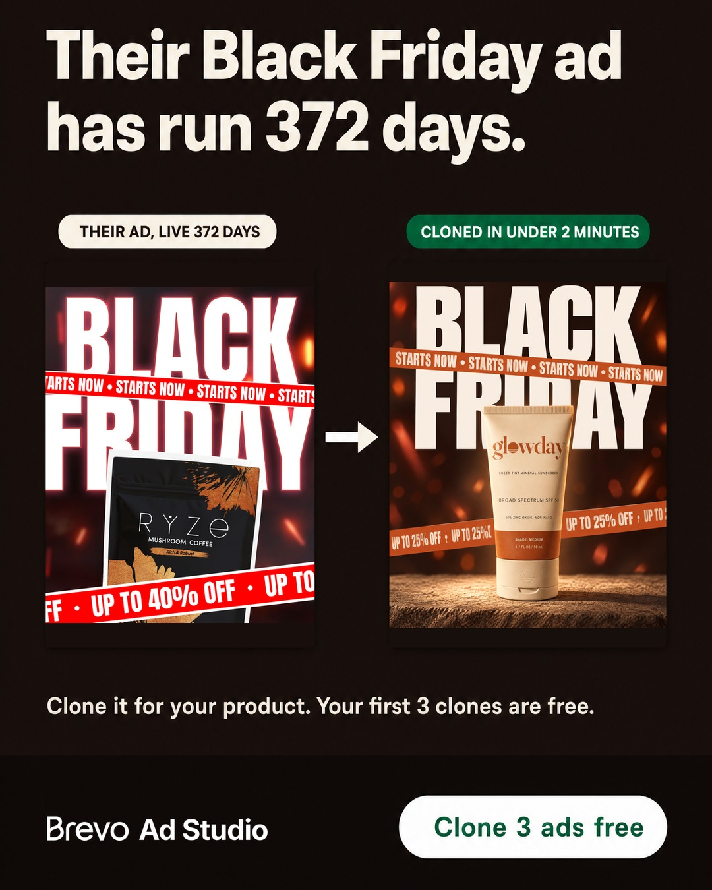
L10 · Their Black Friday ad has run 372 days.This Black Friday ad has run for 372 days. Black Friday lasts a few weeks. Do the math, then clone it for your product before your competitors do. First 3 clones free with Brevo Ad Studio. No credit card.
Headline: Clone a 372-day Black Friday ad · First 3 clones free. · Specific number at the right moment · 9.0/10 · batch2-32a
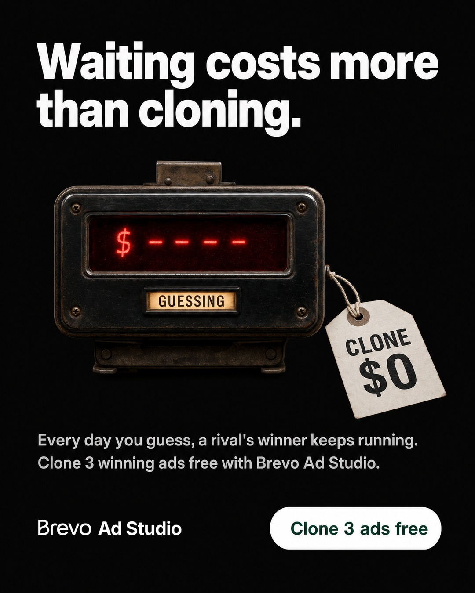
L11 · Waiting costs more than cloning.Every week you test another guess, a rival's winner keeps running and keeps selling. Cloning it takes under 2 minutes. Your first 3 are free with Brevo Ad Studio. No credit card.
Headline: Clone 3 winning ads free · No credit card. · Loss math · 8.5/10 · batch2-38
 L12 · Bet your ad can't beat 164 days.
L12 · Bet your ad can't beat 164 days.Your new ad against a 164-day winner. Honest odds? Skip the bet. Clone the winner for your product with Brevo Ad Studio. Your first 3 clones are free. No credit card.
Headline: Skip the bet. Clone the winner. · First 3 clones free. · The dare (then reverse it) · 8.7/10 · batch2-33b
AS4 · The call-out
Provocation: call out the reader's current habit, then hand them the fix.
 L13 · Stop screenshotting your competitors' ads.
L13 · Stop screenshotting your competitors' ads.Your camera roll is full of competitors' ads. Screenshots don't sell anything. Clone the ones that keep running, rebuilt for your product in under 2 minutes. First 3 free with Brevo Ad Studio. No credit card.
Headline: Clone 3 winning ads free · No credit card. · Accusation by identification · 8.8/10 · batch2-23a
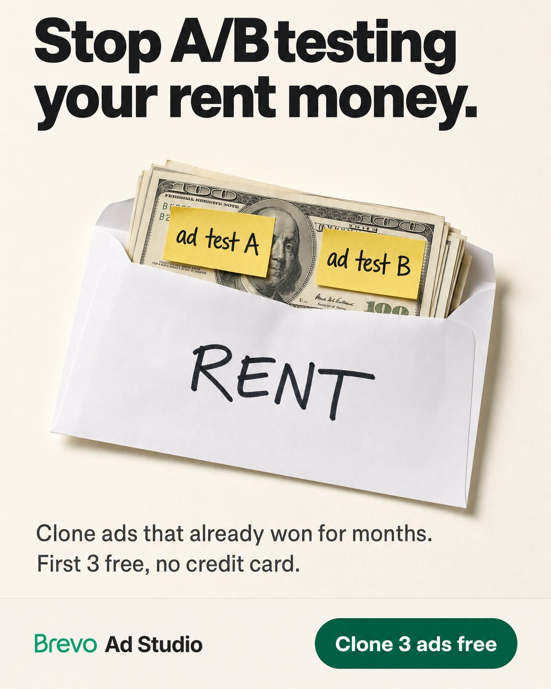
L14 · Stop A/B testing your rent money.Every A/B test that loses is money you never see again. Start from ads that already won for months instead. Brevo Ad Studio clones them around your product. Your first 3 are free, no credit card.
Headline: Start from ads that already won · First 3 clones free. · Accusation (money) · 8.8/10 · batch2-30
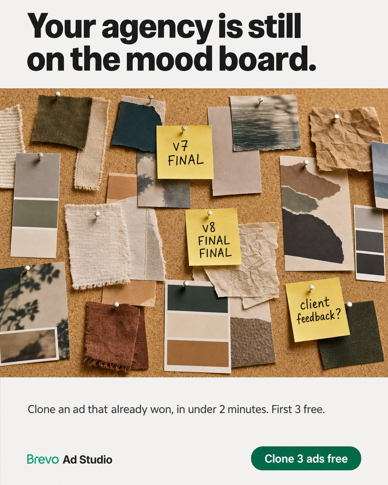
L15 · Your agency is still on the mood board.Your agency is on mood board v8. Meanwhile the ads that already won in your category are sitting on Ad Radar. Clone one around your product in under 2 minutes. First 3 free with Brevo Ad Studio. No credit card.
Headline: Skip the mood board · First 3 clones free. · Mockery of the old way · 8.2/10 · batch2-37
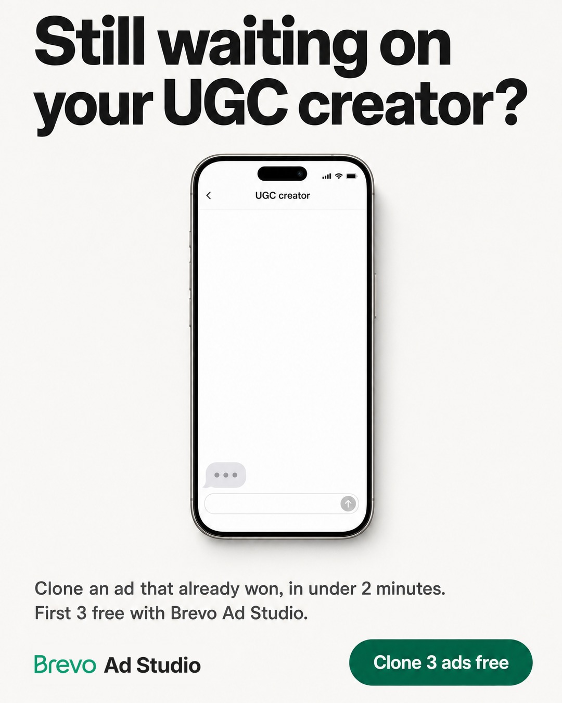
L16 · Still waiting on your UGC creator?Still waiting on a UGC creator to reply? Stop waiting. Clone an ad that already won, around your product, in under 2 minutes. First 3 free with Brevo Ad Studio. No credit card.
Headline: Don't wait. Clone 3 ads free. · No credit card. · The knowing question · 8.3/10 · batch2-34
AS5 · The forbidden truth
Say what everyone thinks about copying winners, out loud.
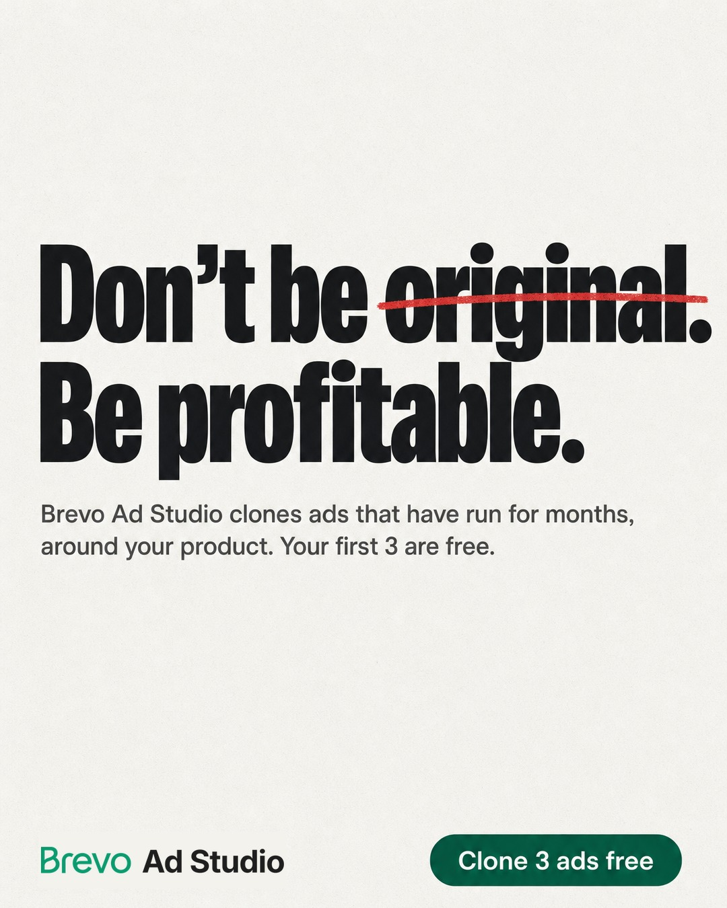
L17 · Don't be original. Be profitable.Originality is overrated when the ad has to sell. The ads that run for months already solved the hard part. Clone one around your product with Brevo Ad Studio. Your first 3 are free. No credit card.
Headline: Clone 3 winning ads free · No credit card. · Forbidden truth · 8.5/10 · batch2-22
 L18 · It's not cheating if it works.
L18 · It's not cheating if it works.The ads that run for months in your category aren't luck. Someone paid to find out they work. Clone the idea around your product with Brevo Ad Studio. First 3 free. No credit card.
Headline: Clone 3 winning ads free · No credit card. · Confession · 8.3/10 · batch2-25
 L19 · Don't clone this ad.
L19 · Don't clone this ad.Seriously, don't. It's only run 179 days. Unless you want an ad that sells for that long, keep scrolling. Still here? Your first 3 clones are free with Brevo Ad Studio.
Headline: Fine. Clone 3 for free. · No credit card. · Reverse psychology · 8.7/10 · batch2-36c
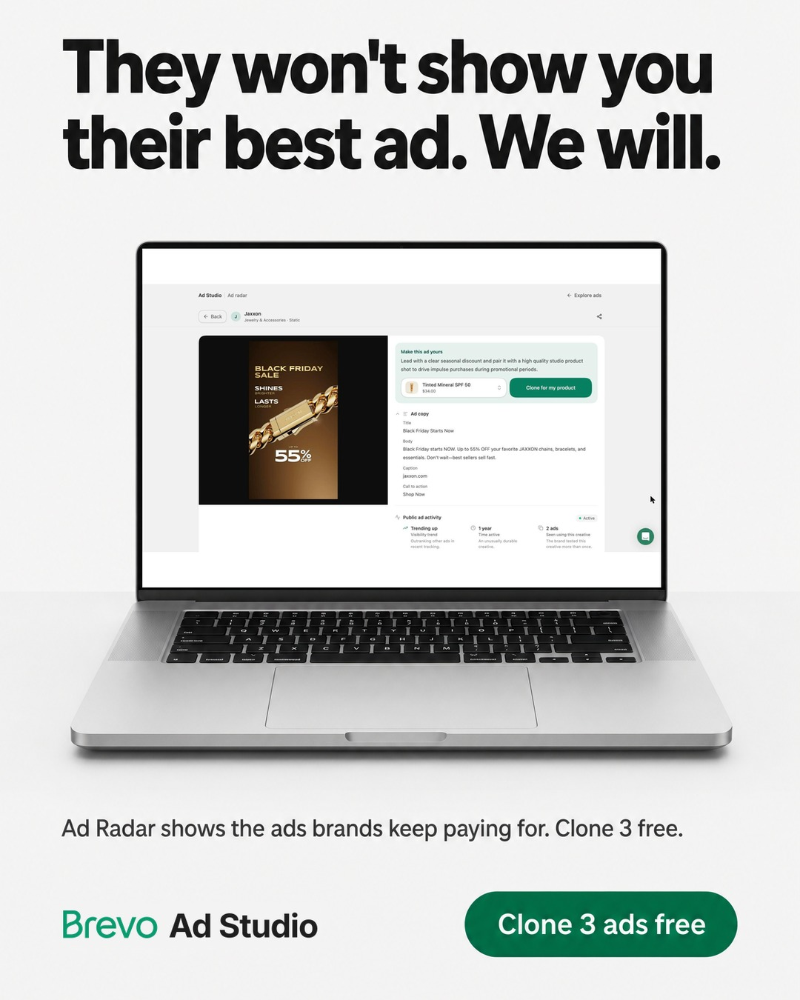
L20 · They won't show you their best ad. We will.Your competitors will never send you their best ads. Ad Radar finds them anyway: the ads brands keep paying to run for months. Clone one for your product. First 3 free with Brevo Ad Studio. No credit card.
Headline: See their best ads. Clone 3 free. · No credit card. · The enemy's secret · 8.5/10 · batch2-29